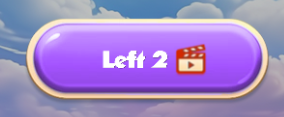

“Box Jenga” Documentation by “APG” v1.0
“Box Jenga”
Created: 07/08/2024
By: APG
Email: apggames99@gmail.com
Thank you for purchasing my game. If you have any questions that are beyond the scope of this help file, please feel free to email via my user page contact form here. Thanks so much!
Table of Contents
- Description
- Folder Content
- Getting Started
- Source Code
- Config
- Language Management
- Store Config
- Audio Management
- Social Api
- Windows Management
- Fonts
- Saving progress
- Change Graphics
- Bundle Build
- Copyright
A) Description - top
Box Jenga is an HTML5 game powered by Phaser 3. Box Jenga takes the classic stacking concept to new heights. Your mission is to strategically drop boxes onto a platform and build the tallest tower possible. The ZIP package contains the game at a 640x960 resolution with auto-resize support for portrait mode. This game is playable on all platforms (mobile, PC, etc.).
B) Folder Content - top
- assets This folder contains assets such as sounds, images, fonts, and XML files.
- docs This folder contains documentation.
- content This folder contains graphical sources.
- external This folder is for external plugins and libraries.
- js This folder contains JavaScript code.
- boot.js This is the main JavaScript file where the game is initialized and assets are preloaded.
- config.js This file contains the game configuration settings.
- game_request.js This file contains requests that manage the user's state.
- index.html This is a root HTML file.
- gulpfile.js GULP config.
- package.json Project's metadata.
C) Getting Started - top
To run the game you just need to run index.html in the browser via local server like Apache, Xampp, or another one.
D) Source Code - top
This game contains:
- Phaser 3
- Our custom scripts
- Phaser 3 is a game framework built with JavaScript that allows you to create games using HTML, a little bit of CSS, and JavaScript.
-
The game has the following JavaScript files:
- ./boot.js: this is the main file that preloads assets and initializes the game.
- ./config.js: this file contains the game configuration.
- ./game_request.js: this file contains requests that manage the user's state.
- ./js/game.js: this file is called in boot.js and creates all the internal classes and managers.
- ./js/game_play/game_play.js: this class is responsible for game logic and gameplay control.
- ./js/game_utilities/audio_manager.js: this class manages sound and music control.
- ./js/game_utilities/custom_button.js: this class creates an in-game button.
- ./js/game_utilities/game_utils.js: this class contains various utility functions.
- ./js/game_utilities/social_api.js: this class manages social functions.
- ./js/game_utilities/test_ad_manager.js: this class manages test interstitial and rewarded ads.
- ./js/game_windows/game_windows.js: this class controls the creation, management, and deletion of windows.
- ./js/game_windows/select_language.js: this class creates a window that allows for language selection.
- The index.html file preloads boot.js, config.js and game_request.js.
- Then in boot.js the process of preloading and game initialization starts when the ready event is called.
- After that, game.js starts the process of creating other classes, containers and managers.
- After all the creations, the map scene starts, allowing the player to begin playing.
- There is a user data object that defines user progress and behavior. When the user performs any action, a request is sent to update the user data. This data is then updated in localStorage. All the requests can be found in game_request.js. Here is an example of how a request is called when the user finishes a level in the GamePlay class:
E) Config - top
The initial configuration can be found in the index.html file, and it contains some basic information.
The gamedata object is in config.js and contains various social and shop-related components.
The userdata object is in config.js and contains information about the user.
There are also some gameplay config in config.js.
F) Language Management - top
There are five languages used in the game: English, French, German, Spanish, and Italian. All of the phrases can be found in ./assets/xml/language.xml. Each phrase has important attributes: scene_id, item_id, and phrase_id, which are needed to call the phrase in JavaScript. Each phrase contains internal tags responsible for specific languages. Each language tag includes two inner tags: <TEXT>, which contains the value, and <SIZE>, which specifies the size value (0 by default). For example, setting -4 will make the phrase smaller by 4 points.

To generate text and set it to the JavaScript Text Object, follow these steps. As shown, you need to call the game_utils.generate_string method and provide scene_id, item_id, phrase_id, values, and base_size. This method returns an object with text and size fields. You can then create bitmap text and set the result accordingly.
I didn't mention the values parameter. For example, if you need a phrase with a dynamic result, you should construct your tag as follows: replace the value with %val, and then pass the desired value into the values array.
To add a new phrase, simply add a <DYNAMIC_PHRASE> tag with three attributes and the necessary inner values and tags. Then, call it in the same way as shown in previous examples.
Additionally, you can switch the language during the game by calling the SelectLanguage window.
If you want to remove a language, you should delete its value from the game_data['langs'] array.

G) Store Config - top
Let's imagine you want to add a new crate skin. To add a new skin to the game, you should:
- Add an image, crate7.png 70x70 (for example) to content/common1 and recreate the common1 sprite sheet.
-
Consider game_data['shop'] object. There is one category: purchasing by viewing ads. Add an object like
{'id': 'crate7', 'price': value}to the ad array.
H) Audio Management - top
Here is path where all sounds and music are located ./assets/audio/ . To call a sound in the game, you should use the following method:
If you want to play looped music, use this method:
If you want to stop all sounds and music, use this method:

You can also stop a specific sound or music, though this case is not used in the game. If you want to do this, you should call game_data['audio_manager'].sound_event({'stop': true, 'sound_type': 'sound' // or 'music'});
There are two fields in the userdata object that define the state of music and sounds.
The control of these fields is managed through two methods in the GameMap class.
I) Social Api - top
If you decide to publish this game anywhere, you should initialize the social features (rewarded ads, interstitial ads, etc.). Consider using the SocialApi class in the game_utilities/social_api.js file as the base for your own implementation. Here is an example of a test net ID social class with mock code:
Here is the initialization of the SocialApi class in the game.js file.
To call a rewarded ad, you should use the game_data['utils'].show_rewarded_ad method. For an example, you can refer to the Shop class.
To call an interstitial ad, you should use the game_data['utils'].check_ads method. For an example, you can refer to the GamePlay class.
In this example, the parameter passed is the string "level_win". To make it clearer, you should consider the game_data['ads']['interstitial']['event_mult'] object. Here, you can see a key with a float value. This indicates the place in the game where the ad could be called and the probability of it being called (e.g., 1 means the ad will be called every time, while 0.3 means the ad will be called 3 times out of 10 on average).
To summarize, let's say you want to publish a game on the Y platform with in-app payments, interstitial ads, and rewarded ads. The platform will provide its own API. To integrate the game with Y, follow these steps:
- Change loading_vars['net_id'] in the index.html file to 'y' for example.
- Implement a class in ./js/game_utilities/social_api.js as shown below.
- Initialize this class in the get_social_api method (./js/game.js) as shown below.
- If the platform offers cloud storage for saving progress, add code to game_request.js in the save_user_data and get_game_info_local methods as follows:
- If the platform requires an initialization process, add it to the initialize function in boot.js as shown below.


J) Windows Management - top
To display any window, you should call the following:

To close this window:
If you want to create your own window, you should initialize it in the display_window method's switch case statement in the ./js/game_windows/game_windows.js file.

All window methods, such as open, close, etc., are located in the ./js/game_windows/game_windows.js file.
K) Fonts - top
There is one font type used in the game: Bitmap Font. It is located in the assets/fonts/ folder. Here is an example of creating a bitmap text:
To use a bitmap font, you should preload it as done in boot.js.
L) Saving progress - top
The current version uses localStorage to save progress. If you don't want localStorage to save progress, set game_data['clear_storage'] = true. This logic is implemented in game_request.js. The get_game_info_local method checks if there was previous progress, and if so, it uses that progress. The save_user_data method saves progress and is called after any request made during the game, such as a buy_booster request. If you want to use a different storage method, you need to implement its API in these methods. An example is shown in the Social API section.
M) Change Graphics - top
Most graphics used in the game are taken from the common1 sprite sheet (./assets/common1.png, ./assets/common1.json). The source graphics are located in ./content/common1/. You can modify any graphics in ./content/common1/ and rebuild the sprite sheet using the TexturePacker tool. Additionally, you can change the background in ./assets/bgs/back1.png to one of your preference.
N) Bundle Build - top
If you set loading_vars['js_combined'] to true, the preloader will try to get the bundle.js file. This is intended for production mode. There are gulpfile.js and package.json files to build. You should install NPM and then run the following commands:
- npm i
- npm start
O) Copyright - top
Interface assets were downloaded from here.
All images used in the game were generated with the Midjourney tool and are free to use commercially.
All sounds and music are free to use commercially and obtained from the following resources:
Once again, thank you so much for purchasing this game. Feel free to contact us if you have any questions or issue relating to this game. No guarantees, but we'll do our best to assist.
APG